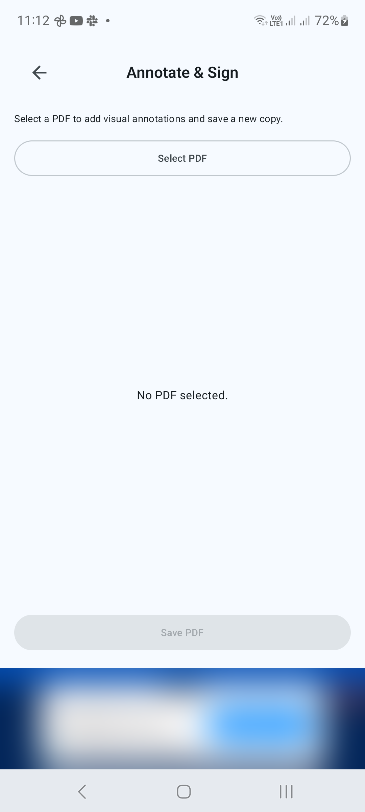
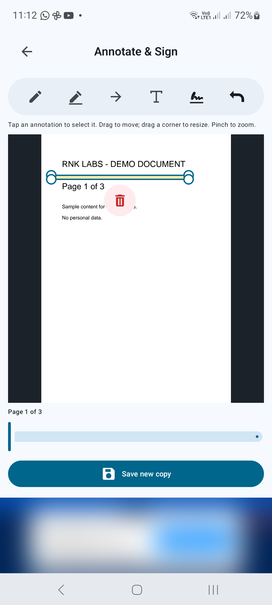
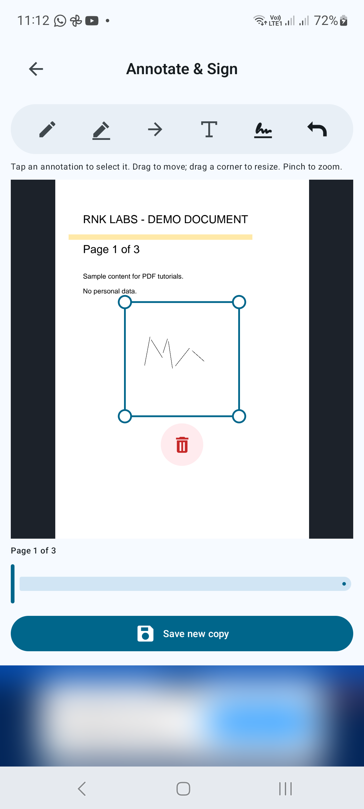
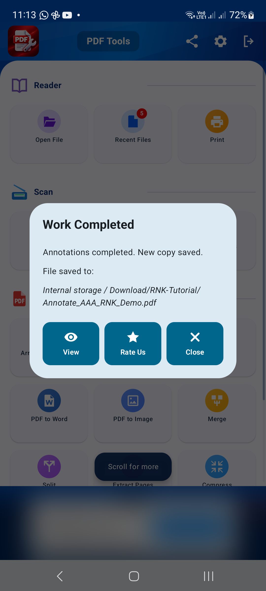

PDF 변환기 / 안드로이드 튜토리얼
Android에서 PDF에 주석을 달고 서명하는 방법
주석 및 서명을 사용하여 시각적 메모, 강조 표시, 화살표, 텍스트 및 서명을 PDF에 추가한 다음 새 복사본을 저장하세요.
스크린샷은 영어 앱 인터페이스를 보여줍니다. 번역된 버튼 이름은 이미지의 라벨과 다를 수 있습니다.
01/04단계
문서를 선택하세요
도구에서 주석 달기 및 서명을 열고 PDF 선택을 탭한 후 파일을 선택합니다. 페이지 위에 도구 모음이 있는 편집기가 열립니다.

02/04단계
메모 및 하이라이트 추가
툴바에서 그리기, 강조표시, 화살표 또는 텍스트 추가를 선택합니다. 선택한 도구의 지시에 따라 주석을 배치합니다. 다른 페이지로 이동하려면 미리보기 아래의 페이지 컨트롤을 사용하세요. 더 가까이서 봐야 할 때는 손가락을 모아 확대/축소하세요.

03/04단계
서명 삽입 및 위치 지정
서명 삽입을 탭하고 서명 도구의 지시를 따릅니다. 주석을 탭하여 선택하고, 드래그하여 이동하고, 모서리를 드래그하여 크기를 조정하세요. 원하지 않는 수정사항을 되돌리려면 실행취소를 사용하세요. 저장하기 전에 서명의 크기와 위치를 검토하세요.

04/04단계
새 사본 저장
새 사본 저장을 탭하고 대상과 파일 이름을 선택한 후 확인합니다. 출력을 열어 메모와 서명이 의도한 페이지에 나타나는지 확인합니다.

더 나은 결과를 위한 팁
- 연습할 때 문서 사본을 사용하세요.
- 주석이 필수 텍스트를 숨기지 않는지 확인하세요.
- 서명된 문서를 보내기 전에 수신자의 서명 요구 사항을 확인하세요.

Android에서 시작하기
PDF Converter, Scanner & Tools
JPG를 PDF로, PDF를 Word로 변환하고, 스캔하고, 읽고, 병합하고, 압축하는 등의 작업을 수행하세요.
Google Play에서 구매하세요